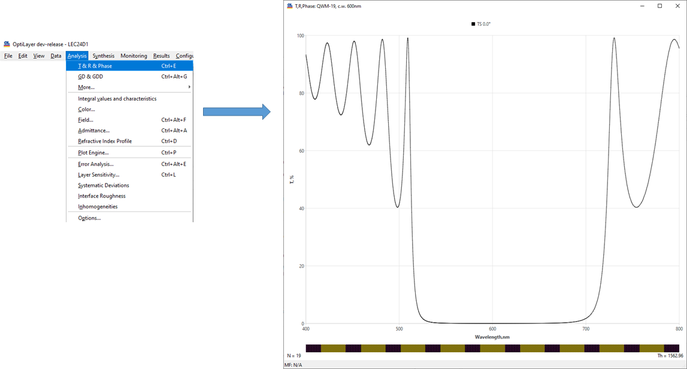

Example 1. Main concepts of OptiLayer software. Demonstration using quarter-wave mirrors (QWM)
One of the main concepts of OptiLayer software is the concept of decentralized data storage. This means that data related to different projects of the user is not stored in one directory, but in separate directories, each of which is intended to solve specific problems. The corresponding project directories have sets of databases for storing data related to this project: substrate and layer refractive indices, target spectral characteristics, designs, etc. All such databases are stored on the computer’s hard disk, and to begin working on a project, the user must load the necessary datafiles from the databases into the computer’s RAM. The main purpose of this example is to demonstrate how it works. Another important concept relates to the way how designs of optical coatings are specified. In OptiLayer, optical thickness and not physical thickness play a primary role in design specification. Of course, both types of thicknesses are interrelated and this example will show how this relation is established. But any design can be initially specified using a formula representation. For example, the formula (HL)^9 H describes a quarter wave mirror having 19 layers with odd high index layers and even low index layers. The considered example shows how the physical thicknesses of this mirror are specified in calculations.
In the File -> Project menu of OptiLayer, find the directory LEC24D1 and open it. The datafiles needed to evaluate the spectral properties of the 19-layer QWM are already stored on the hard disk. In Data ->Substrate, look at the contents of the substrate database. It has an item with the name Glass n=1.52.
Using the Edit tab, check the refractive index of this file.
 Note that there is nothing in the wavelength field because the non-dispersive substrate index is specified.
Note that there is nothing in the wavelength field because the non-dispersive substrate index is specified.
In the same way check the contents of the layer material database.
Go to the design database and check the file QWM-19, c.w. 600 nm.
The number of layers of this design is 19 – see the The number of layers filed. The spreadsheet below has exactly 19 rows corresponding to the layers of this design and numbered according to the layer number, starting from the substrate. The Material column of this spreadsheet has the default designations for the refractive indices of design layers with abbreviations H and L. These abbreviations are specified in the Odd material and Even material fields at the upper part of the spreadsheet. Note that the specific layer materials will be set later. The Physical th column has zeros in all rows because these thicknesses are not yet specified. The column QWOT (quarter wave optical thicknesses) has the default values of 1. In fact, the values in the QWOT column and the letters in the Material column correspond to the formula (HL)^9 H for a 19-layer quarter wave mirror. The value 600 in the Control wavelength field at the upper part of the window specifies the control wavelength of the QWM in nanometers. In accordance with this wavelength, the values of the layer optical thicknesses in the Optical th column are determined. The FWOT column specifies the layer optical thicknesses as full wave optical thicknesses that are four times the quarter wave optical thicknesses.

To evaluate spectral characteristics of a 19-layer QWM, load the substrate datafile, layer material datafiles, and design into RAM (Load tabs in the respective databases). Check the General information window (first option in the View menu).
 Note that the names of the downloaded datafiles have arrived in
the corresponding lines of the General information window. Also note that the abbreviations H and L have been automatically assigned to the low and high indices of the downloaded materials.
Note that the names of the downloaded datafiles have arrived in
the corresponding lines of the General information window. Also note that the abbreviations H and L have been automatically assigned to the low and high indices of the downloaded materials.
In the design database, open the file QWM-19, c.w. 600 nm.
 Note that the Physical th column now has non-zeros values in all
rows. The layer physical thicknesses were determined from the
corresponding optical thickness values using the refractive
indices of the loaded materials.
Note that the Physical th column now has non-zeros values in all
rows. The layer physical thicknesses were determined from the
corresponding optical thickness values using the refractive
indices of the loaded materials.
It is now possible to evaluate the spectral characteristics of the quarter wave mirror. To do this, go to the T&R&Phase option in the Analysis menu. The mirror transmittance is plotted in the default spectral range of 400 to 800 nm.

It is possible to change the evaluation spectral range and the characteristics plotted. To do this, use the right mouse click in the evaluation window. To add additional characteristics for plotting, use the Add button in the Plot options window.